An enterprise agent platform handles one million tasks a month. Some extract invoice fields, classify support requests, and normalize CRM records. Others research pricing, interpret contracts, negotiate customer language, recommend credit actions, or prepare changes to valuable accounts. The platform team adds a router: “easy” prompts go to a cheaper model, “hard” prompts go to a larger one. Token spend falls in the first dashboard. Then retries replay long contexts, tool calls multiply, verification runs after the expensive branch, a fast route misses a material exception, and the organization cannot allocate cost or loss to the workflow decision that caused it. The cheapest model call is not the cheapest completed business outcome.
This story was written with AI writing and visualization assistance. The company, task volumes, prices, costs, probabilities, losses, budgets, performance values, calibration sample, operating targets, and chart data are synthetic; the architectures and equations are reference designs, not claims about a deployed router or current model-provider performance. Research results are attributed to their source papers, while all production thresholds require target-workload measurement, validation, and governance.
Model routing is usually presented as a classification problem: predict request difficulty, then choose a weak or strong model. That is useful research abstraction, but an enterprise action is not merely a query. It has business value, loss exposure, privacy constraints, tool permissions, context requirements, deadlines, verification options, capacity scarcity, and recovery cost. A production route is therefore a portfolio containing a model, deployment, context policy, tools, inference settings, retry limit, verification path, and escalation rule.
The decision is capital allocation. The platform spends scarce inference, latency, verification, and human-attention budgets where they create the highest risk-adjusted business value—subject to controls that cannot be traded away.
Route the action, not the prompt; optimize the completed, verified business outcome, not the nominal model call.
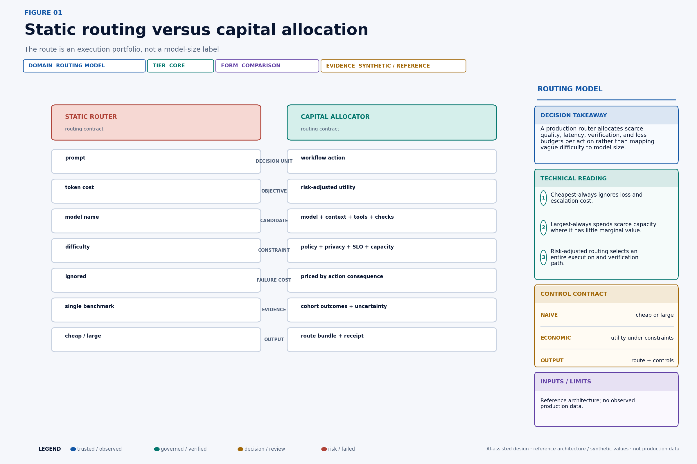
Technical summary#
A governed router should receive a typed action and evidence manifest, construct an eligible portfolio of route bundles, remove candidates that violate privacy, authority, quality, latency, geography, capacity, or assurance constraints, and rank the remaining candidates by expected business utility. The utility function includes decision value, execution cost, delay cost, verification cost, expected loss, and a tail-loss penalty. The result is a signed or integrity-bound route receipt containing feature versions, candidates, exclusions, scores, selected controls, policy version, expiry, and fallback.
The router operates at workflow-step grain. Its cost ledger joins every attempt, replayed token, tool invocation, verifier, queue delay, human decision, compensation, and incident to a stable workflow and action identity. Outcome evaluation separates model correctness from tool success and business postconditions. Cohort-specific calibration and out-of-distribution detection determine whether router probabilities are decision-useful. Unknown or weakly supported inputs abstain, escalate, or use a conservative route.
Offline evaluation cannot infer every candidate's outcome from logs containing only the selected route. It needs randomized exploration within safe bounds, propensity scores, shadow executions, parallel labels, or counterfactual estimators with explicit assumptions. Promotion requires quality floors, tail-latency limits, budget limits, calibration, policy-violation controls, novelty handling, expected-loss or tail-loss limits, and receipt coverage. Online adaptation remains behind versioned policy, drift detection, constrained exploration, and immediate fallback.
Research supports the premise that routing can improve cost-quality trade-offs. RouteLLM learns routers from preference data to choose between stronger and weaker models. Hybrid LLM predicts when the smaller model can satisfy a desired quality level. FrugalGPT studies prompt adaptation, approximation, and cascades, reporting substantial gains in its evaluated settings. Those results establish routing opportunity; they do not establish safe enterprise action policy, provider-independent transfer, or a universal production threshold.
Scope and decision unit#
The synthetic workload includes six action cohorts: structured extraction, CRM enrichment, customer messaging, pricing exception analysis, data export review, and account closure. Each action has a typed schema, purpose, input evidence, business owner, resource scope, value or impact band, reversibility, deadline, authority requirement, and postcondition. The router never receives a free-floating string with no business context.
A model is an inference artifact and version. A deployment adds provider or infrastructure, region, privacy boundary, throughput, context window, and service characteristics. A route bundle combines model deployment, system instructions, evidence-selection policy, tool set, generation settings, retry rule, verifier, and escalation. A routing policy maps a feature vector and portfolio state to an eligible bundle. A route receipt preserves the inputs and decision. A business outcome is the verified domain result, not merely an accepted completion.
The route decision can be expressed as:
r* = argmax U(r | x, p)
over r in F(x, p)x is the action and evidence feature vector. p is current portfolio state: candidate versions, price, capacity, health, regional availability, and policy. F is the feasible set after hard controls. U is risk-adjusted utility. The separation matters. A route that violates a data boundary is not “slightly less attractive.” It is ineligible.
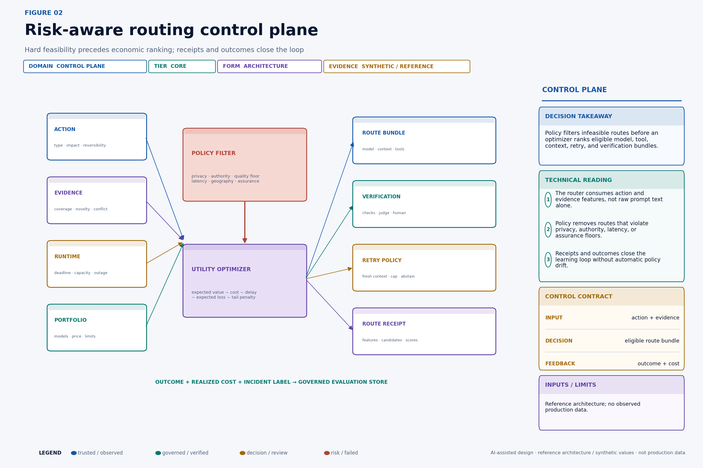
Build a routing control plane#
The routing control plane should be independent of application prompt code. Applications submit governed action envelopes. A feature service retrieves declared, versioned features. A policy decision point determines eligible deployments and mandatory controls. An optimizer ranks complete bundles. A scheduler reserves capacity and enforces deadline budgets. The inference gateway executes the chosen route. Verification and effect gateways validate output and tools. The receipt store joins decision, realization, and outcome.
This architecture prevents several common failures. Product teams cannot silently bypass the privacy boundary by naming a model directly. A model outage does not cause an arbitrary fallback; the receipt lists eligible alternatives and constraints. A budget alarm cannot downgrade a high-risk action below its assurance floor. A new provider version does not enter consequential traffic without capability and cohort evidence.
The API should return more than a model name:
{
"route_decision_id": "rd_291",
"workflow_id": "wf_442",
"action_id": "act_price_18",
"policy_version": "router-policy/27",
"portfolio_snapshot": "portfolio/2026-08-23T10:20:00Z",
"selected": {
"deployment": "hosted-deep/eu/v12",
"context_policy": "pricing-evidence/9",
"tools": ["policy_lookup", "quote_simulator"],
"verification": ["schema", "policy", "independent_judge"],
"max_attempts": 2,
"on_failure": "human_pricing_queue"
},
"excluded": [
{"route": "hosted-fast/us/v8", "reason": "DATA_REGION"},
{"route": "local-8b/v5", "reason": "QUALITY_FLOOR_UNPROVEN"}
],
"expires_at": "2026-08-23T10:20:20Z"
}The receipt is an operational and governance artifact. It enables replay under a proposed policy, cost allocation, incident analysis, and explanation of why the apparently cheaper route was excluded.
Account for the completed workflow#
Token price is an input rate, not unit economics. A route can trigger input tokens, output tokens, prompt caching, embeddings, retrieval, reranking, model-based tools, external APIs, retries, replayed context, deterministic verification, model judging, human review, queue delay, compensation, and incident work. Some failed workflows incur cost without producing a completed unit.
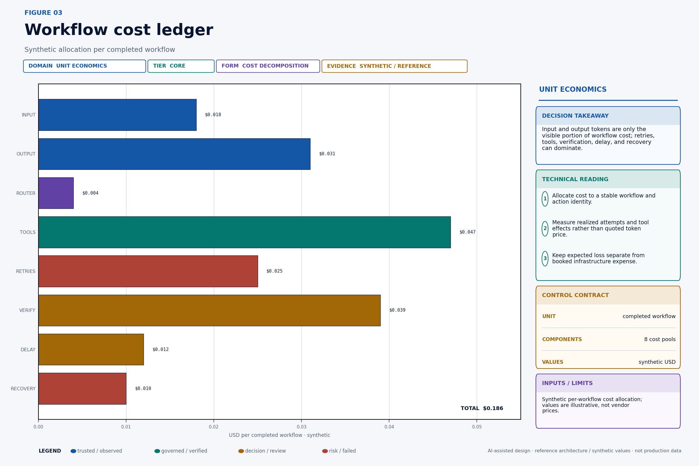
Use one stable allocation key across every execution component:
CREATE TABLE workflow_cost_event (
event_id text PRIMARY KEY,
tenant_id text NOT NULL,
workflow_id text NOT NULL,
action_id text NOT NULL,
route_decision_id text NOT NULL,
attempt_id text,
cost_pool text NOT NULL,
quantity numeric NOT NULL,
unit text NOT NULL,
unit_rate numeric,
booked_cost_usd numeric,
event_time timestamptz NOT NULL,
price_version text,
source_receipt text NOT NULL
);The denominator must be explicit. cost per request hides retries and incomplete work. cost per model answer ignores tool and verification failure. cost per completed workflow may hide output quality. A decision-ready view includes cost per attempted action, verified action, successful business outcome, recovered workflow, and value unit such as accepted case, retained account, or prevented loss.
Keep booked expense and expected loss separate. Booked cost can reconcile to invoices and infrastructure. Delay and expected harm are economic estimates with uncertainty. Combining them into one unlabeled “cost” column makes audit and ownership impossible.
The synthetic Figure 3 allocates $0.018 to input, $0.031 to output, $0.004 to routing, $0.047 to tools, $0.025 to retries, $0.039 to verification, $0.012 to delay, and $0.010 to recovery. The values are illustrative. The analytical point is that input plus output represent only part of the completed-workflow cost.
Reconcile technical telemetry to financial truth#
The execution ledger and the finance ledger answer different questions. Runtime telemetry records tokens, milliseconds, attempts, cache hits, tool units, and verifier calls at event time. Finance records invoices, cloud amortization, committed-use discounts, support contracts, internal labor, currency conversion, tax treatment, and allocation policy at accounting close. A credible routing business case needs a bridge between them rather than pretending the model-provider line item is the whole expense.
Use an immutable usage event as the quantity record, a versioned rate card as the provisional valuation, and a monthly reconciliation record as the booked valuation. Never rewrite the original quantity when an invoice arrives. Append the price variance and its cause: tier threshold, cache discount, minimum commitment, foreign exchange, correction, or shared-capacity allocation. This preserves both operational replay and financial audit.
For internally hosted models, calculate capacity cost explicitly. GPU expense is not just active inference time; it includes reserved but idle capacity, replicas held for availability, orchestration, storage, networking, observability, engineering support, and depreciation or cloud commitment. Allocate that pool using a declared driver—reserved tokens per second, accelerator-seconds, or capacity entitlement—and show utilization separately. A seemingly cheap internal route can be expensive if its low-latency reservation is mostly idle, while a hosted route can become expensive when retries or long-context input dominates.
The business view should reconcile four layers:
• Usage: physical quantities produced by each workflow and attempt.
• Rated cost: quantities multiplied by the rate card effective at execution.
• Booked cost: invoice and internal-cost allocation after reconciliation.
• Economic exposure: delay, expected loss, recovery, and foregone value, kept separate from accounting expense.
A model-routing team should be able to explain a monthly variance as volume, mix, price, efficiency, or failure-path effects. Volume means more actions. Mix means a larger share of difficult or high-assurance actions. Price means rate-card or infrastructure change. Efficiency means fewer tokens, calls, or verifier units for the same outcome. Failure-path variance means more retries, tool errors, recovery, or human escalation. Without this decomposition, a cost reduction may merely reflect fewer completed outcomes or unsafe routing mix.
Optimize risk-adjusted utility#
The router should maximize the expected value of the business decision, not a context-free accuracy score. A useful objective for route r and action features x is:
U(r | x) = E[V_correct(r, x)]
- C_execution(r, x)
- C_verification(r, x)
- C_delay(r, x)
- E[L_error(r, x)]
- λ_tail × CVaRα(L_error(r, x))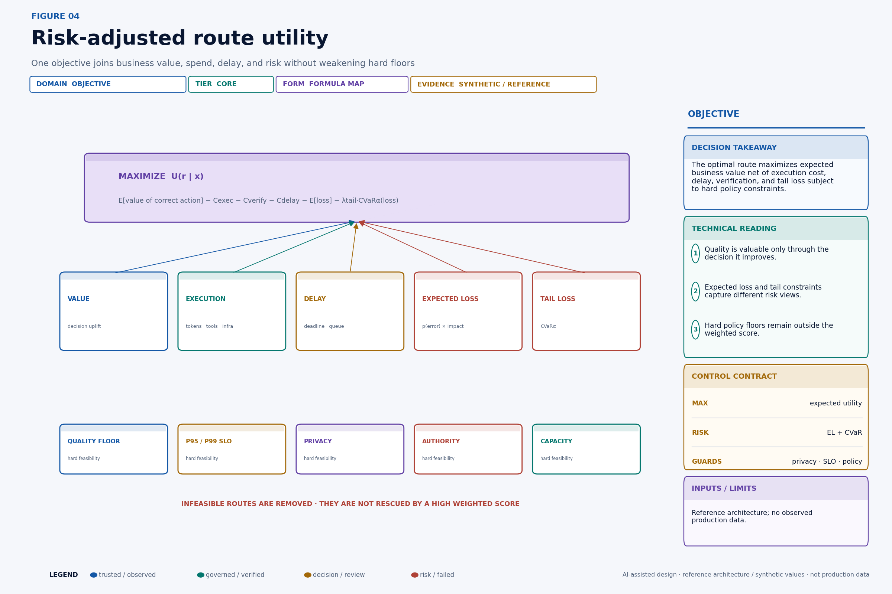
V_correct represents the incremental business value of a useful correct action. It can be zero for routine compliance work where the objective is loss avoidance. C_execution includes all route attempts and tool calls. C_verification includes automated and human assurance. C_delay prices missed deadlines, queueing, and slower customer response. E[L_error] weights route error probability by consequence. CVaRα describes the average loss in the worst 1 − α share of modeled outcomes, useful when average loss understates an unacceptable tail.
Every term needs units and evidence. If utility is dollars, convert latency to a documented business-delay estimate and label judgmental inputs. If the organization is uncomfortable monetizing rights, legal, safety, or reputational outcomes, encode hard constraints and categorical risk limits rather than inventing false precision.
The optimizer can be a rule table, linear program, contextual bandit, learned ranking model, or constrained policy. Complexity is secondary to observability and calibration. A transparent rule that routes all material exports through a private deployment and human privacy review can be superior to a learned scorer with no defensible outcome labels.
NIST's AI RMF Core calls for risk management across governance, mapping, measurement, and management, including documented context, expected benefits, costs, risk tolerance, and ongoing monitoring. It does not prescribe this formula. It supports the broader control expectation that economic benefit and risk evidence be documented across the lifecycle.
Treat routes as capabilities, not model ranks#
A global leaderboard assumes one task distribution, metric, prompt format, inference configuration, and evaluation contract. Enterprise routes face heterogeneous constraints. A local model may be strongest for privacy and predictable latency but weak on a novel reasoning task. A hosted fast route may be excellent for tools but ineligible for restricted data. A large model plus independent verifier may improve assurance but miss the deadline.
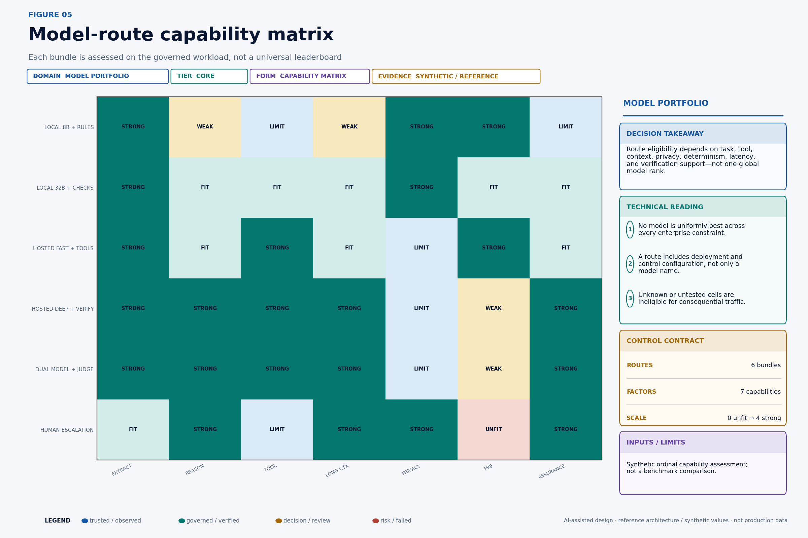
Maintain a model-route registry at deployment-and-configuration grain:
route_id: hosted-deep-eu-v12-verified
model_artifact: model-family/v12
deployment: eu-prod/deep-3
context_policy: evidence-pack/v9
tools: [policy_lookup, quote_simulator]
verification: [schema, policy, judge-v4]
eligible_data_classes: [internal, confidential]
prohibited_actions: [raw_personal_data_export]
evaluated_cohorts: [pricing_exception_v6, contract_reasoning_v4]
quality_floor: 0.975
latency_contract: {p95_ms: 5200, p99_ms: 7800}
capacity_contract: {reserved_rps: 12, burst_rps: 24}Unknown cells are not zero; they are unproven. For low-impact traffic, the policy may explore within a bounded safe set. For consequential actions, missing evidence makes the route ineligible until evaluated. Model updates, quantization, system-prompt changes, tool changes, context selection, and verifier changes can alter the route and should create a new version.
Remove dominated routes by cohort#
For a fixed cohort and evaluation contract, route a dominates route b if a is no worse on every decision-relevant objective and strictly better on at least one. In a simple cost-quality view, a route that costs more and scores lower is dominated.
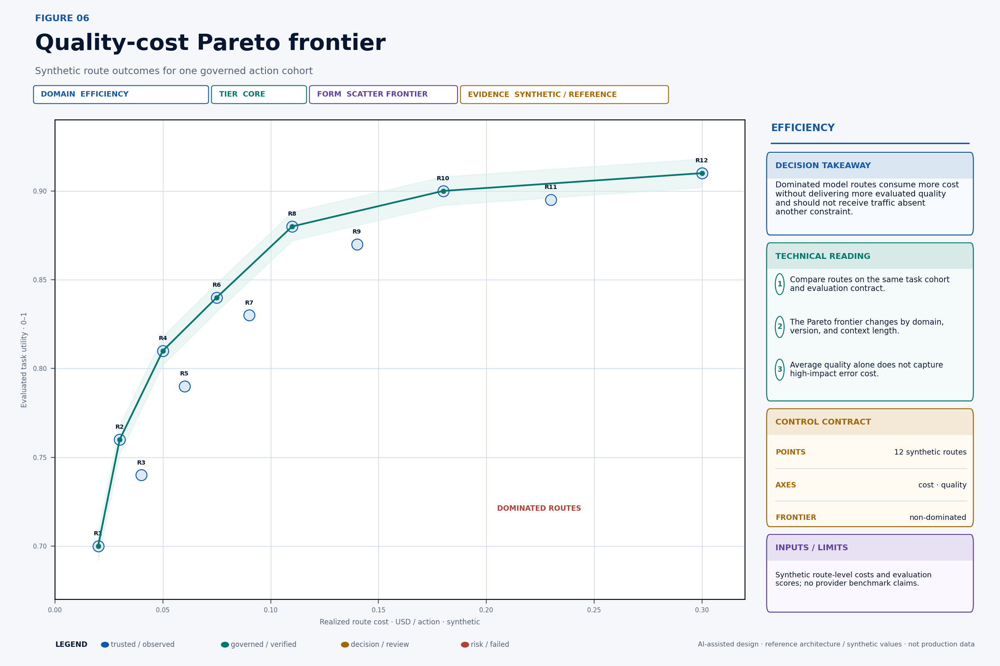
The frontier is conditional. It changes by action cohort, language, context length, tool set, deployment region, latency objective, verifier, and model version. Report sample size and uncertainty. A route with an estimated quality of .90 on 80 easy cases is not necessarily better than .88 on 20,000 representative cases.
Do not delete every dominated route automatically. A route may remain valuable as outage fallback, private boundary, capacity reserve, or diversity control. Record the reason. The portfolio should distinguish economically dominated on the measured cohort from operationally redundant under all constraints.
Research benchmarks help reveal complementarity. RouterBench introduced a framework and dataset with more than 405,000 inference outcomes to compare multi-model routing strategies. More recent LLMRouterBench reports over 400,000 instances across 21 datasets and 33 models; its unified evaluation finds strong model complementarity but also similar performance among many methods and a persistent gap to the oracle. That is a useful warning: a sophisticated router name does not guarantee material advantage over a well-designed baseline on the target workload.
Add business loss before selecting the frontier#
Average task quality treats a punctuation error and an unauthorized account action as comparable misses. Route economics must condition error value on the action.
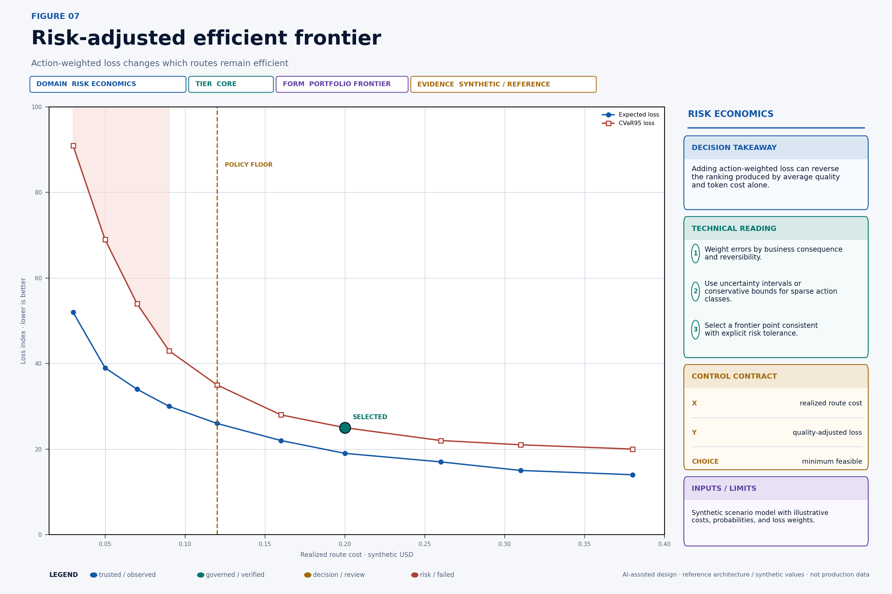
For action class k:
E[L(r, k)] = Σ_j P(error_type_j | r, k) × Impact(error_type_j, k)Error types should reflect the workflow: unsupported extraction, wrong classification, policy omission, unsafe tool arguments, false claim, privacy disclosure, stale evidence, or inappropriate refusal. Impact can include money, customer remedy, rights, operational load, regulatory duty, and propagation. Use intervals where evidence is sparse.
Tail constraints prevent the optimizer from accepting rare catastrophic exposure in exchange for a small average saving:
minimize C_total(r, k) + E[L(r, k)]
subject to P(L(r,k) > L_max(k)) <= epsilon_k
CVaR95(L(r,k)) <= tail_limit_k
quality(r,k) >= quality_floor_kThe risk model must not double-count the same consequence in expected loss, CVaR, and a separate penalty without explanation. Run sensitivity against plausible probability and impact ranges. If the route choice flips under small assumption changes, the decision is uncertain and may require more evidence or conservative policy.
Filter policy before scoring economics#
Some constraints are categorical. Restricted personal data cannot move to an unauthorized region. A route without tool authority cannot execute the action. A novel high-impact request cannot inherit a low-risk cohort's evidence. A route that cannot finish required verification before expiry is not eligible.
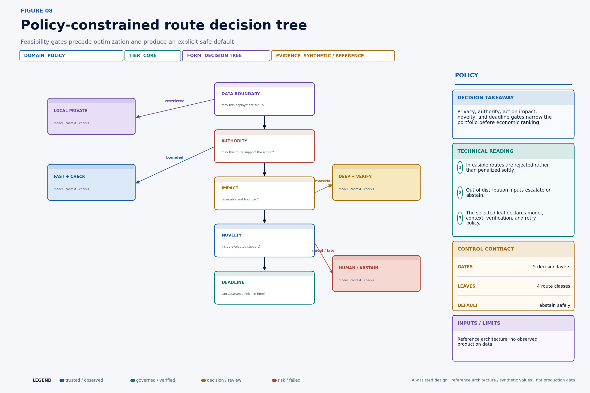
Implement the filter with explicit reason codes:
def eligible(route, action, runtime):
reasons = []
if action.data_class not in route.eligible_data_classes:
reasons.append("DATA_CLASS")
if action.region not in route.allowed_regions:
reasons.append("DATA_REGION")
if action.type in route.prohibited_actions:
reasons.append("ACTION_PROHIBITED")
if route.quality_lcb(action.cohort) < action.quality_floor:
reasons.append("QUALITY_LOWER_BOUND")
if route.p99_ms + route.required_verification_ms > action.deadline_ms:
reasons.append("DEADLINE")
if runtime.ood_score > action.max_ood_score:
reasons.append("OOD")
return not reasons, reasonsUse a lower confidence bound rather than a point estimate for critical cohorts. Re-evaluate feasibility when provider health, capacity, price, policy, or evidence changes. The receipt should show both candidates considered and candidates excluded. Otherwise an incident reviewer cannot distinguish “the optimizer preferred route A” from “route B was unavailable or prohibited.”
Version the feature pipeline#
A router feature vector may include action type, domain, schema complexity, evidence length, evidence coverage, contradiction count, language, novelty, impact, reversibility, tool plan, deadline, model health, queue depth, price, and capacity. Those features come from different systems and times. Without versioning, offline evaluation cannot reproduce a decision.
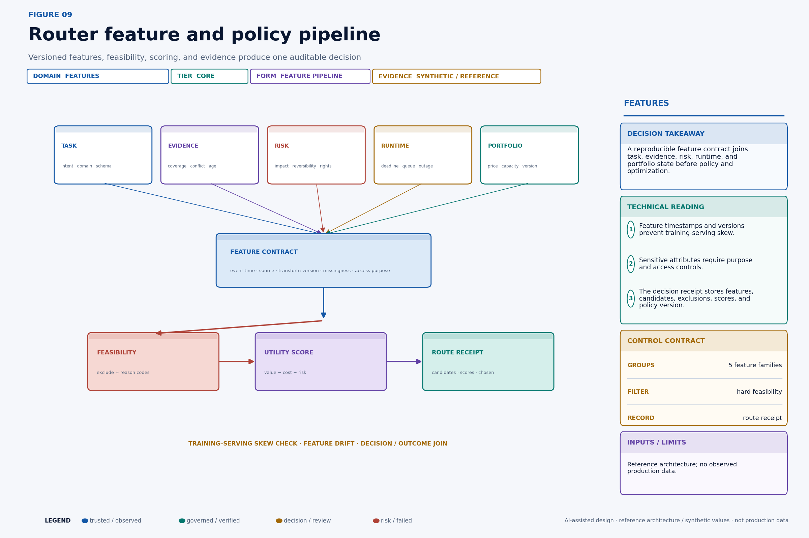
Store source event time, observation time, transform version, missingness, and access purpose. Define defaults and reject states for missing features. A missing impact_band on a consequential action should not become numeric zero. It should trigger a conservative band or ineligibility.
Prevent target leakage. A feature available only after execution cannot train a router that makes a pre-execution decision. Prevent policy leakage: if historical human review caused better outcomes, a model may learn that high-risk cases are “easy” because the label includes the reviewer. Train and evaluate the route bundle as actually deployed, including assurance.
Sensitive or protected attributes require explicit purpose, access control, and subgroup analysis. Some attributes may be necessary to enforce jurisdiction or assess unequal failure. Others may be prohibited as optimization features. Governance should distinguish measurement attributes from decision attributes.
Calibrate predicted suitability#
Suppose the router estimates q = P(strong route adds decision value | x). A threshold such as q > .65 is meaningful only if the probability is calibrated on the deployment cohort. Among cases assigned about .70, the event should occur at approximately the expected rate, within uncertainty and definition limits.
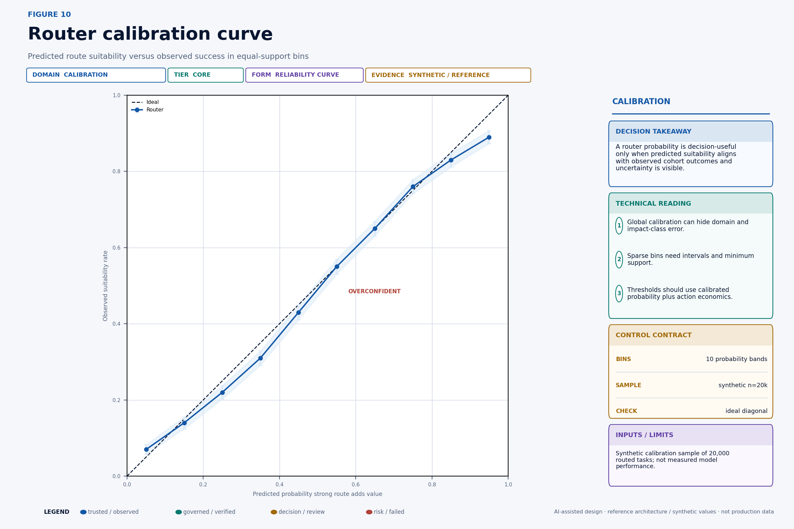
Expected calibration error can be summarized as:
ECE = Σ_b (n_b / n) × | accuracy_b − confidence_b |But one global number can hide critical cohort failure. Report calibration by action class, impact band, language, route candidate set, novelty band, and time. Use confidence intervals and minimum support. A bin with 30 observations should not drive a precise high-impact threshold.
Calibration can drift when a candidate model changes, prompt templates shift, business mix changes, tool availability changes, or users adapt. Monitor the feature distribution and the relationship between router score and eventual outcome. Recalibration may repair probability mapping; it cannot repair a feature set that no longer separates useful routes.
Economic thresholds combine calibrated probability with marginal value:
choose strong when
q(x) × ΔV_correct(x)
+ ΔE[loss_reduction(x)]
> ΔC_execution(x) + ΔC_delay(x) + ΔC_verification(x)Hard policy controls still apply on both sides.
Detect unsupported requests and abstain#
A router is most dangerous when it is confident far from its evaluation support. Novelty can arise from a new domain, schema, jurisdiction, product, language, attachment type, tool combination, context length, adversarial pattern, or business-value range.
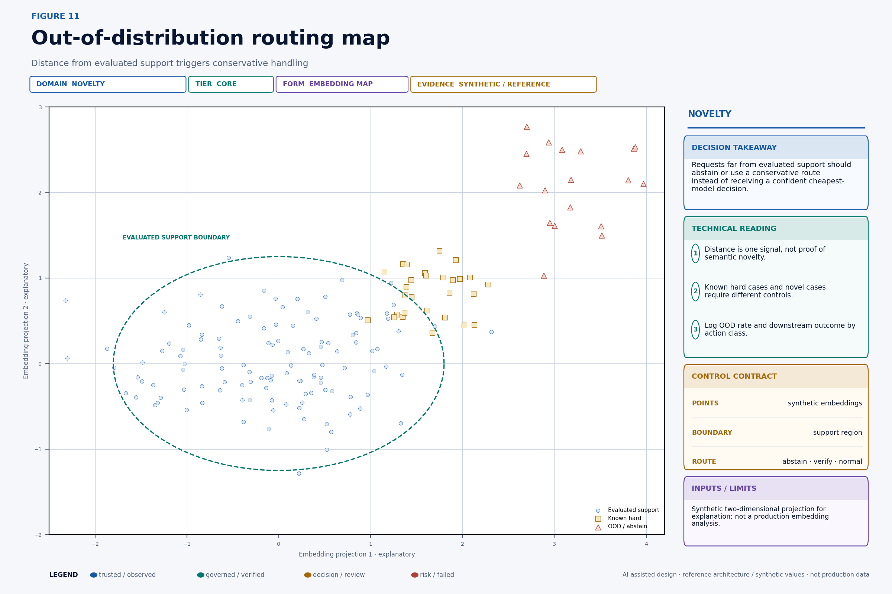
No single distance threshold proves semantic novelty. Combine multiple signals: embedding distance, density, classifier uncertainty, schema mismatch, unseen category, evidence missingness, disagreement among routers, high entropy, and explicit policy novelty. Evaluate false-positive and false-negative costs.
Separate known hard from unknown. A familiar complex tax clause may be inside support and require a deep route. An apparently simple request for a newly regulated product may be outside support. Difficulty and novelty are not synonyms.
OOD behavior should be declared per action class: abstain, use a conservative private route, require independent verification, route to a human, or run shadow-only. Record the novelty signals and later adjudicated outcome. A high OOD abstention rate may indicate safe behavior or poor coverage; operations needs both numerator and business context.
Cascades spend budget conditionally#
A cascade begins with a lower-cost route and escalates when uncertainty, deterministic checks, policy, or expected value justifies another call. It can outperform a one-shot allocation when early stages resolve enough work cheaply and escalation signals are reliable.
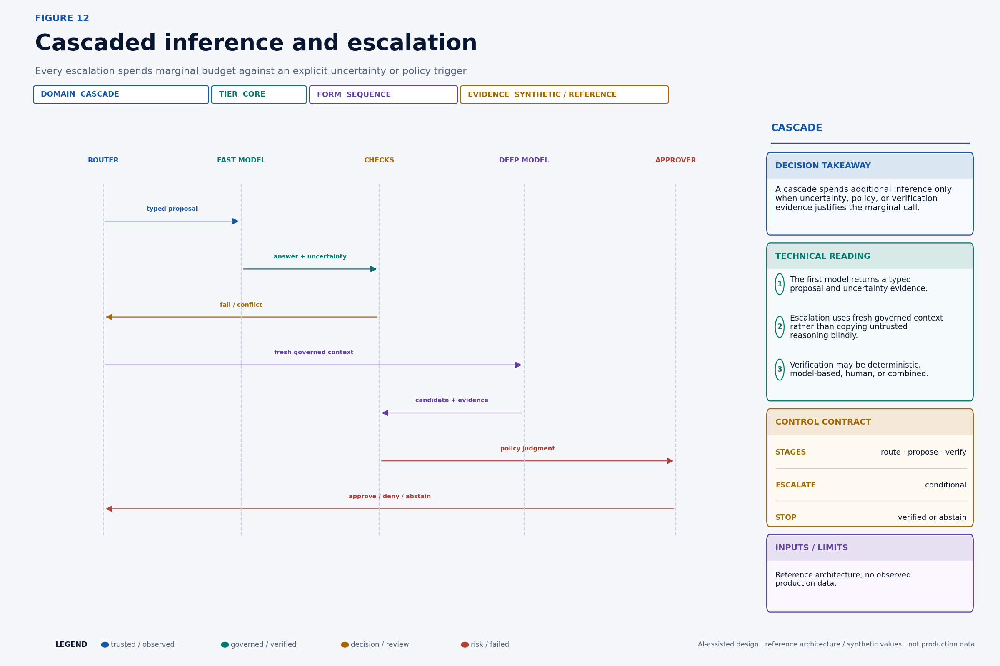
The first model should return a typed proposal, evidence references, and uncertainty signals—not a stream of hidden reasoning that the next model must trust. Deterministic checks validate schema, calculations, citations, policy fields, tool preconditions, and contradictions. If escalation is required, reconstruct context from governed evidence and the typed proposal. Copying the entire first response can anchor the stronger model on the original error and increase context cost.
Cascades need stop conditions and attempt caps. A verifier that repeatedly asks the same model to “try again” can create correlated retries rather than independent evidence. Vary the error channel deliberately: deterministic computation for arithmetic, retrieval for source claims, a different model or prompt family for independent critique, and qualified human judgment where policy or ambiguity requires it.
FrugalGPT formalizes cascades among cost-saving strategies and reports strong cost-quality results in its experiments. Hybrid LLM estimates the quality gap between smaller and larger models and allows a desired quality level to adjust routing. Production teams should preserve the insight—spend marginal inference where it adds value—while re-estimating performance on their action and assurance bundle.
Measure retry and tool inflation#
Nominal route cost often excludes failure paths. A timeout can replay the full context. A tool can fail after a billable model call. A verifier can trigger another generation. A recovery step can invoke additional tools and human attention.
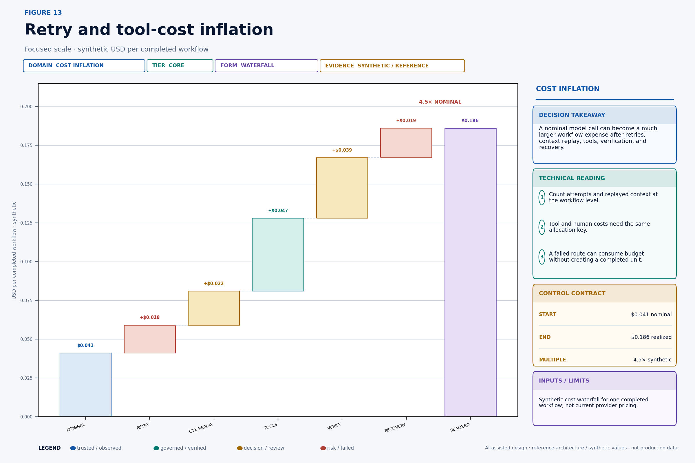
Define realized route cost:
C_realized(action) = Σ_attempt C_inference
+ Σ_tool C_tool
+ Σ_check C_check
+ Σ_human C_human
+ C_queue_delay
+ C_recoveryAllocate failed attempts to the action even when a later route succeeds. Report the distribution, not only the mean: P50, P95, P99, and conditional cost for recovered or failed workflows. High tail cost can exhaust a monthly budget despite acceptable average unit economics.
Retry policy is part of the route. Specify retryable errors, maximum attempts, backoff, context-reuse policy, idempotency requirements for tools, and terminal fallback. A response-quality retry differs from a transport retry. The former should usually create a new candidate with a documented reason; the latter must preserve the same business action identity.
Allocate verification where it reduces loss#
Equal verification sampling is simple but inefficient. Model confidence is also insufficient: high confidence can be miscalibrated, and low confidence on a harmless action may have little business consequence. Allocate assurance capacity by expected marginal loss reduction and policy duty.
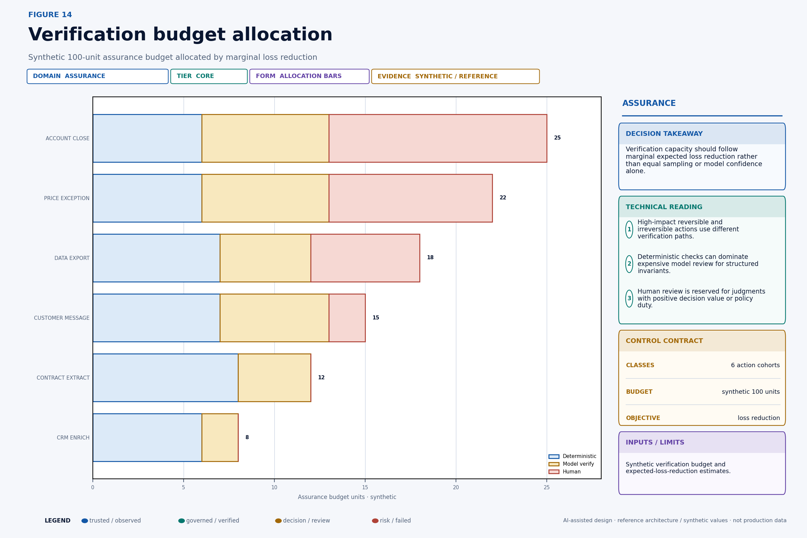
For verification mode v, action cohort k, and route r:
MVR(v, r, k) = E[L_without_v − L_with_v]
− C_v
− C_delay_v
− E[L_verifier_error_v]Fund modes with positive marginal verification return, subject to capacity and mandatory controls. Deterministic checks are often cheapest and most reliable for typed schemas, arithmetic, value limits, allowlists, resource versions, and exact citations. A model verifier may help with semantic contradictions or unsupported claims but can share correlated blind spots. Human review adds value for policy judgment, novel high-impact cases, and duties requiring a qualified person; it also adds queueing, variability, and fatigue.
The Figure 14 synthetic allocation uses 40 deterministic units, 31 model-verification units, and 29 human units across six cohorts, totaling 100. It is not a recommended universal mix. A production allocation needs observed error modes, reviewer capacity, deadlines, and action-level loss estimates.
Use the shadow price of budget#
When inference and verification budgets are constrained, each extra unit has opportunity cost. In constrained optimization, the Lagrange multiplier on the budget constraint can be interpreted as a shadow price: the marginal objective improvement available from one more budget unit near the optimum.
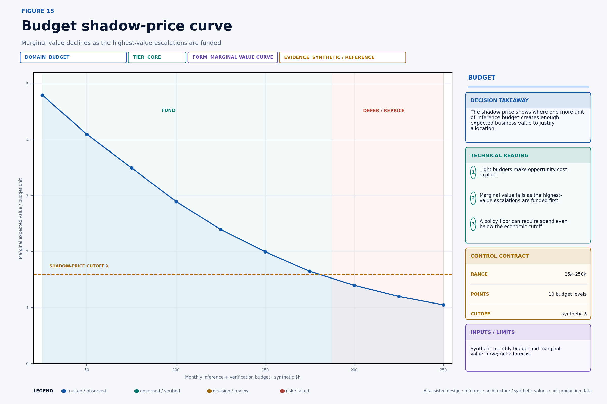
Suppose routes are chosen for cohorts k with volume n_k:
maximize Σ_k n_k × U(r_k, k)
subject to Σ_k n_k × C(r_k, k) <= B
all hard cohort constraints holdThe shadow price λ_B helps compare marginal expansions: additional deep-model capacity, verification workers, lower-latency reservations, or better evaluation. If a candidate escalation's expected marginal value is below the current shadow price, defer or reprice it—unless a policy floor requires the spend.
Budget exhaustion must never silently weaken privacy, authority, safety, or mandatory review. The system can throttle low-priority work, queue until the next window, ask for a business-owner exception, or fail closed. Hard controls remain hard even when the economic portfolio is constrained.
FinOps should manage more than provider invoices. It should expose committed and forecast spend by workflow, cohort, route, model version, cost pool, retry reason, verifier, business unit, and outcome. Risk owners should see the same allocation with expected and realized loss. One shared decision ledger prevents cost optimization and risk governance from operating on incompatible denominators.
Reserve capacity against business deadlines#
Cost and latency are coupled through capacity. A lower-price route is not feasible when its queue makes the action miss a commercial or control deadline. The scheduler therefore needs an admission decision after route eligibility and before execution. It should evaluate remaining deadline, predicted service time, verification duration, queue position, reserved capacity, rate limits, retry allowance, and fallback lead time.
For an action with deadline D, arrival time t0, predicted queue time Wq, inference service time S, verification time V, and recovery reserve R, the route has positive slack only when:
slack = D − t0 − Wq − S − V − R > 0Use distributions rather than averages for consequential work. If a pricing exception must be answered within ten minutes, a route with two-minute mean duration and fifteen-minute P99 is materially different from a route with three-minute mean and six-minute P99. Reserve enough time for the authorized fallback; otherwise the first attempt consumes the entire decision window and turns a recoverable failure into a missed obligation.
Capacity can be divided into baseline reservations for critical cohorts, elastic pools for normal work, and interruptible pools for batch or low-priority work. The router should price these classes differently because consuming reserved capacity has an opportunity cost even if the immediate provider charge is the same. During degradation, admission control should shed or defer the lowest-value eligible work before it violates a critical cohort's latency or assurance floor.
Forecasting should join business arrival curves with technical service curves. Model hourly and day-of-week demand, campaign or close-of-quarter spikes, tenant concentration, context-size distribution, tool latency, verifier concurrency, human-review staffing, and correlated provider failure. A simple independent-arrival simulation will understate tail pressure if many workflows arrive after the same batch, market event, or upstream outage. Stress tests should include burst traffic, one candidate unavailable, slower tools, reduced human capacity, and an elevated novelty rate at the same time.
The operating decision is then concrete: buy more reserved inference, improve prompts or context to reduce service time, move eligible work to another route, add verification capacity, relax only a genuinely negotiable deadline, or throttle low-priority demand. Each option has a price and a measurable effect on completed outcomes. “The model is slow” is not an actionable portfolio diagnosis.
Evaluate counterfactual policy honestly#
Historical logs reveal outcomes for the route that was chosen. They usually do not reveal what every other model and verification bundle would have produced. Training or evaluating only on chosen-route outcomes creates selection bias: the old policy sent particular cases to particular models.
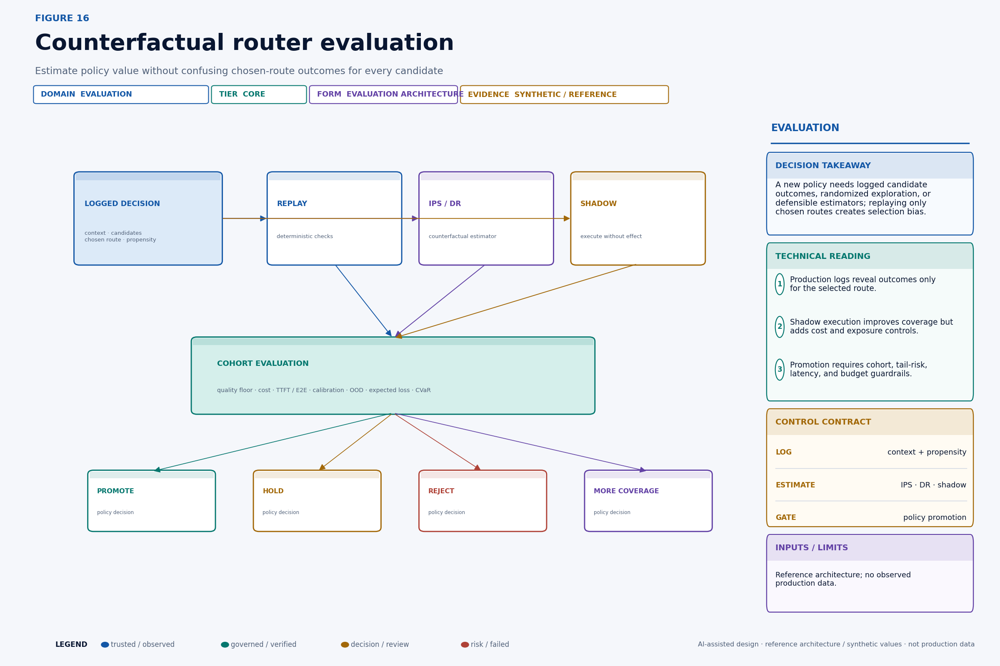
Safe evidence options include:
• Deterministic replay for rules, feature transforms, policy filters, and stable verifiers.
• Shadow inference that executes candidate models without permitting external effects.
• Randomized exploration among policy-eligible routes for low-risk cohorts, with logged probability of selection.
• Parallel adjudication or human labels on a stratified sample.
• Inverse propensity scoring or doubly robust estimation when assumptions and support are defensible.
For logged action i, old-policy propensity p_i(a_i | x_i), new-policy probability π(a_i | x_i), and observed reward y_i, the inverse-propensity estimator is:
V_IPS(π) = (1/n) Σ_i [π(a_i | x_i) / p_i(a_i | x_i)] × y_iIf the old policy never selected a candidate for a region of feature space, the denominator provides no support and IPS cannot invent the counterfactual. Extreme weights increase variance. Clip only with documented bias trade-offs, report effective sample size, and use doubly robust methods when a credible outcome model is available.
Shadow outputs still need evaluation. A model response judged by another model may encode evaluator bias. Tool calls cannot always run safely in shadow. Customer and downstream effects may be unobservable without controlled experiments. Preserve these limitations rather than promoting on an appealing offline average.
The MLPerf Inference documentation describes a benchmark suite for measuring system inference performance across deployment scenarios. Standardized performance evidence is useful, but enterprise routing also needs action-level end-to-end duration, queueing, tool latency, verification, retries, and business postconditions. Hardware or model throughput is not workflow throughput.
Build an investment-grade evaluation dossier#
A candidate policy should be reviewed like a capital proposal, not a demo. The dossier needs a frozen evaluation manifest: action taxonomy, sampling frame, exclusions, time range, volumes, input lineage, label protocol, route and prompt versions, tool mocks or snapshots, price version, latency environment, outcome maturity window, and known gaps. Publish the manifest hash with the result so a later rerun can establish what changed.
Split evaluation by causal purpose. A capability set measures whether each bundle can perform each action cohort under representative conditions. A routing set measures whether the policy chooses among already eligible bundles. A stress set exercises long context, contradictory evidence, provider failure, tool timeouts, policy boundaries, novel schemas, and high-loss edge cases. A regression set preserves known incidents and previously fixed failures. Mixing these into one leaderboard obscures whether the model failed, the router selected poorly, or the control plane degraded.
Do not randomly split near-duplicate workflow records across train and test. Group by customer, case, template, source document, or temporal episode as appropriate, then reserve a forward time window. Otherwise the router can memorize a recurring request family and appear to generalize. Report overlap checks, support coverage, cohort prevalence, missing labels, and the share of production traffic that the evaluation does not represent.
Promotion evidence should include paired comparisons when the same safely replayable action is run through candidate bundles. For binary adjudicated success, report the paired difference and confidence interval, not only two independent percentages. For cost and duration, show distributions and bootstrap intervals because tails are skewed. For loss, show scenario assumptions and sensitivity. For calibration, show reliability by consequential cohort. For policy, require zero known selection of ineligible routes in the test harness and explicit mutation tests that prove each hard gate can reject.
The decision memo should translate metrics into a portfolio outcome. At forecast volume, how many additional verified successes are expected? What booked spend changes? How much P99 capacity is consumed? Which failure types rise or fall? How much human-review demand moves by hour and skill? What is the worst plausible loss under the sensitivity range? Which cohorts receive no benefit and should remain on the old route? A global “12% cheaper at equal quality” statement is insufficient if the saving comes from low-impact extraction while tail exposure increases in contract or account actions.
Approval must bind to the evaluated artifact. Record the policy digest, route-registry snapshot, feature contract, rate card, verifier versions, eligibility rules, and rollback target. If any material component changes before launch, invalidate or scope the approval. The production canary then tests the forecast under real arrival, queue, tool, and outcome conditions; it does not retroactively excuse missing offline evidence.
Operate independent routing objectives#
A router can meet its average cost target while failing a critical quality cohort. It can meet quality while exceeding P99 latency. It can meet both while becoming miscalibrated or allowing unsupported novelty through. Operate separate objectives.
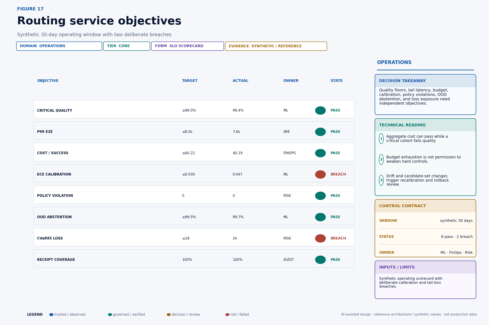
Define every metric with cohort, denominator, time window, and oracle:
critical_quality
= adjudicated_correct_critical_actions
/ adjudicated_critical_actions
cost_per_verified_success
= booked_workflow_cost
/ actions_with_verified_success
policy_violation_rate
= route_decisions_with_ineligible_selected_route
/ route_decisions
OOD_abstention_rate
= OOD_actions_abstained_or_conservatively_routed
/ adjudicated_OOD_actionsQuality needs coverage reporting: adjudication rate, missing labels, label delay, disagreement, and appeal. Latency should include time to verified result, not only time to first token. Cost should include retries and assurance. Expected loss and CVaR need sensitivity and incident reconciliation. Receipt coverage should be 100% for consequential routes because missing evidence disables governance.
Error budgets can control rollout. If calibration or tail-loss budget is consumed, freeze expansion and fall back to the last safe policy. If provider capacity degrades, rerun feasibility rather than forcing the optimizer to choose an unavailable route. If budget consumption accelerates, throttle eligible low-priority cohorts—not critical controls.
Define the operating model#
The ML platform team owns router runtime, feature contracts, model registry, calibration, policy execution, receipts, and technical SLOs. Domain product teams own action schemas, decision value, outcome definitions, deadlines, and workflow trade-offs. Risk, legal, privacy, and security own categorical constraints and tail-risk tolerance. FinOps owns booked-cost integrity, forecasting, budget policy, and allocation views. Operations owns fallbacks, capacity incidents, and recovery.
No team should optimize alone. FinOps cannot downgrade assurance based only on invoice variance. ML cannot promote based only on benchmark accuracy. Risk cannot require universal largest-model routing without pricing capacity, latency, and residual error. Product cannot hide unsuccessful actions from the denominator.
Create a monthly portfolio review with route additions and removals, candidate-version changes, cohort frontier shifts, cost inflation, calibration drift, novelty, policy exclusions, incident loss, capacity, verification yield, and shadow-policy evidence. Material policy changes receive owners, effective dates, rollback versions, and post-deployment review.
Vendor management belongs in the portfolio. Prices, quotas, regions, retention terms, service characteristics, and model behavior can change. Avoid provider-specific claims in permanent policy. Bind policy to evaluated route versions and capabilities. Requalify a material change before treating it as interchangeable.
Write the portfolio business case#
The business case should start with a baseline cohort table rather than a proposed model. For each action class, record monthly volume, completion rate, verified quality, P95 and P99 time to postcondition, booked cost per verified success, human minutes, expected loss range, top failure types, and current capacity constraint. Then state the intervention: which route bundle changes, which controls remain fixed, what verification is added or removed, and which traffic is explicitly out of scope.
Forecast value as a bridge from the baseline. A defensible annual contribution model can be written as:
Contribution = value of additional verified outcomes
+ avoided execution and recovery cost
+ avoided modeled loss
− incremental inference and tool cost
− incremental verification and review cost
− platform, evaluation, and change costShow low, base, and high cases. Volume, success uplift, human-time conversion, incident probability, and adoption are uncertain and should not share one false-precision estimate. Separate cashable savings, such as avoided vendor usage or contractor hours, from capacity released but not removed from the cost base. Separate revenue influenced from revenue recognized. If an improved route merely completes work faster, quantify whether the deadline affects conversion, service level, working capital, or risk; do not label latency reduction as value without a mechanism.
Assign benefit and risk owners. Finance validates cost assumptions and cashability. The domain owner validates volume, action value, and adoption. Operations validates staffing and capacity. Risk validates loss scenarios and categorical constraints. Engineering owns delivery and run cost. The approval record should name who accepts residual risk and who can halt the policy if the canary violates its bounds.
Finally, fund learning deliberately. Some proposed spend has immediate production return; some buys evidence that could change a later allocation. A stratified adjudication sample, shadow run, or evaluator improvement can have option value because it reduces uncertainty around a high-volume decision. Treat that as an explicit evaluation investment with a question, sample requirement, expiry, and decision it will unlock—not as an indefinite research budget.
Migrate from fixed routes to governed allocation#
Do not begin with an online bandit controlling high-impact production traffic. Build evidence and control in stages.
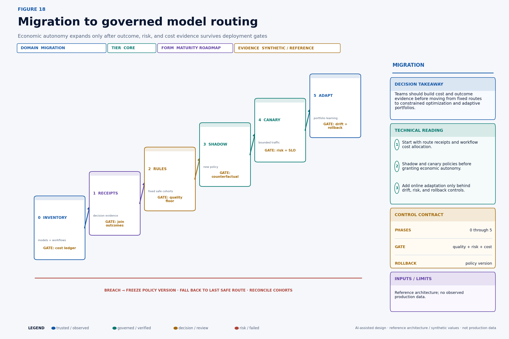
Phase 0 — inventory. Enumerate models, deployments, prompts, tools, workflows, data boundaries, retries, verifiers, prices, capacity, and owners. Establish the workflow cost ledger.
Phase 1 — receipts. Give every route decision stable workflow, action, attempt, policy, candidate, and selected-route identities. Join realized cost, latency, verification, postcondition, incident, and adjudication.
Phase 2 — fixed rules. Define safe cohorts and explicit eligibility. Use simple deterministic routes and fallbacks. Establish quality floors, novelty handling, and route-level SLOs.
Phase 3 — shadow. Evaluate learned or optimized policies without external effect. Build candidate coverage through safe shadow inference and stratified adjudication. Compare with simple baselines and the fixed policy.
Phase 4 — bounded canary. Allocate a small, policy-eligible cohort under traffic, budget, loss, latency, and exploration limits. Use immediate fallback to the last safe route. Expand only after full label windows and tail review.
Phase 5 — governed adaptation. Update portfolio allocation on a controlled cadence or online only within approved bounds. Detect feature, outcome, calibration, price, and candidate drift. Version every policy and preserve instant rollback.
Each gate must define what evidence is sufficient, not merely who signs. A canary should specify minimum sample, cohort coverage, quality lower bound, calibration limit, P99 duration, cost per verified success, expected and tail loss, policy violations, incident count, and observation window.
Failure modes and limitations#
The reward is misspecified. A router optimized for model-judge preference may not improve business postconditions. Join downstream outcomes and keep proxy limitations explicit.
The action mix changes. Aggregate gains can disappear when a new region, product, language, or high-impact cohort grows. Monitor cohort mix and reweight evaluation.
Router and verifier errors correlate. A model-based router, generator, and judge may share blind spots. Use deterministic checks, independent evidence, model diversity where validated, and human adjudication.
Price and latency are nonstationary. Provider price, caching, quota, queueing, and outage state can change the frontier. Snapshot portfolio state and re-evaluate feasibility at execution.
A cheap route can create expensive recovery. Cost allocation must include retries, compensations, customer remediation, and incident labor. Sparse incidents require uncertainty ranges rather than zero expected loss.
Exploration creates exposure. Randomization needs a policy-eligible safe set, action-level caps, monitoring, informed governance, and immediate stop. Some actions should never explore online.
Counterfactual estimators rely on support and assumptions. Propensity errors, hidden confounding, extreme weights, and outcome-model bias can invalidate results. Report diagnostics and prefer controlled evidence when stakes are high.
Figures are explanatory. Every numerical figure in this story is synthetic. None establishes current model rankings, safe thresholds, provider pricing, achievable savings, or forecast value.
Production-readiness questions#
Before enabling dynamic routing for consequential actions, answer:
• Is the decision unit a typed business action with stable identity and postcondition?
• Does every route include model, deployment, context, tools, retry, verification, and fallback?
• Which hard controls define the feasible set, and are exclusions recorded?
• Can cost be allocated from every attempt and tool to a verified workflow outcome?
• Are booked cost, delay cost, expected loss, and tail loss separated and auditable?
• Which route capability cells are measured, uncertain, or untested for each cohort?
• Is the router calibrated by action class, impact, language, novelty, and time?
• What happens outside evaluated support?
• Do cascades use fresh governed context, independent checks, and bounded stop rules?
• Is verification allocated by loss reduction and duty rather than confidence alone?
• Does offline evaluation have support for the new policy, with propensities or shadow evidence?
• Which SLO or risk breach freezes rollout and invokes the last safe policy?
• Who owns model evidence, action value, cost integrity, risk constraints, and operations?
• What marginal business value justifies each additional dollar, second, model call, and reviewer minute?
If the platform cannot answer these questions, it does not have model routing economics. It has a traffic splitter with an invoice dashboard.
Further questions#
The target workload must determine whether quality complementarity is stable, which simple baseline is difficult to beat, how long labels take to mature, where the router is miscalibrated, which OOD signals correlate with failure, how retries inflate tail cost, whether verifiers add independent information, and which cohorts create most marginal value from expensive inference. It must also determine which constraints remain categorical even if monetized utility favors a cheaper route.
The governing principle is:
Spend model and verification capacity where it changes the risk-adjusted business decision—and preserve enough evidence to prove that it did.